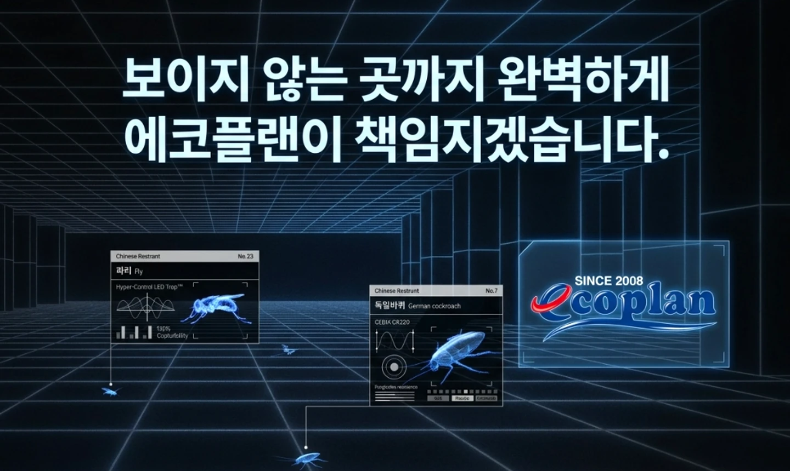
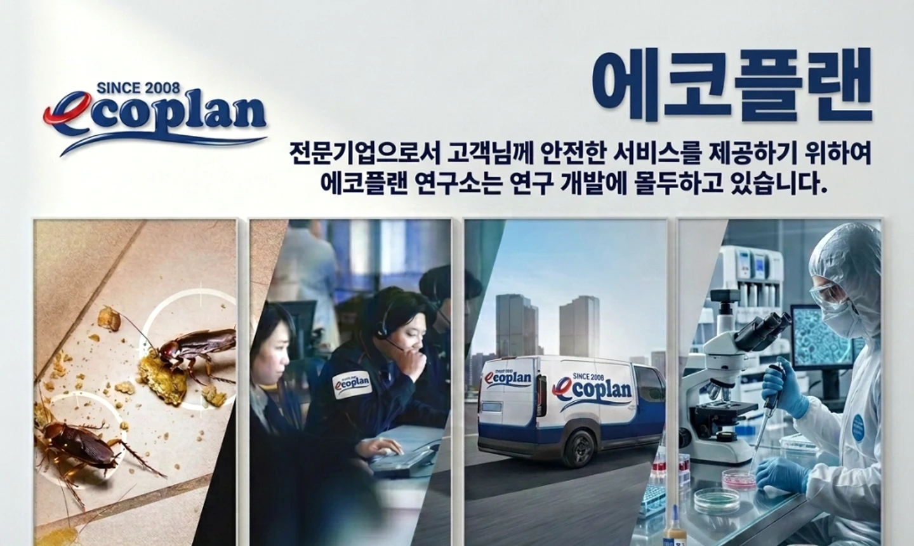
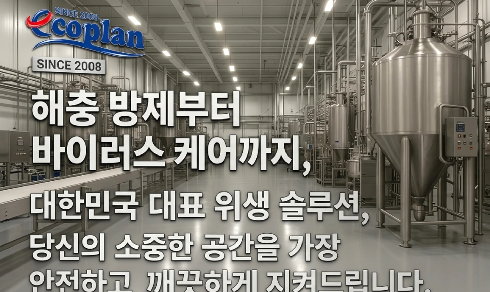
보이지 않는 원인까지,
과학으로 설계하는 방제.
해충의 실내 유인 요인(Why), 침입 경로(Where), 활동 시간(When)을 추적하는 3W 분석과 IPM 통합방제로 공간을 지킵니다.
단순 살포가 아닌 원인 차단 시스템
모기(열→CO2→냄새), 파리(음식부패취→온도) 등 해충별 실내 유인 요인과 건물 침입 경로를 정밀 분석해 맞춤 방제 주기를 설계합니다.
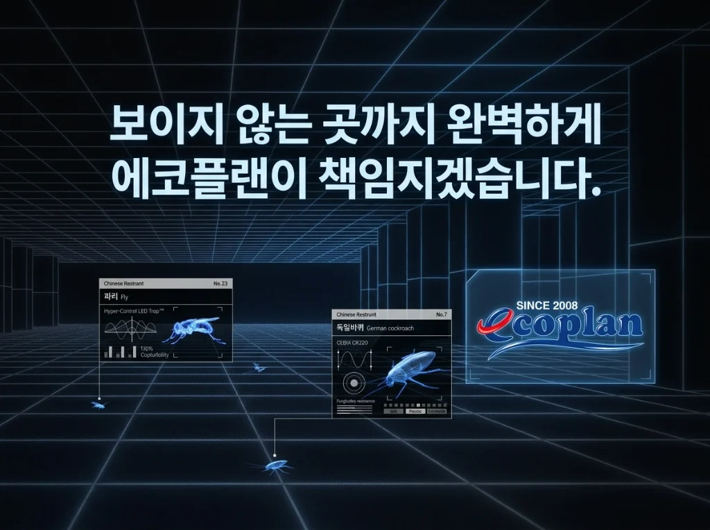
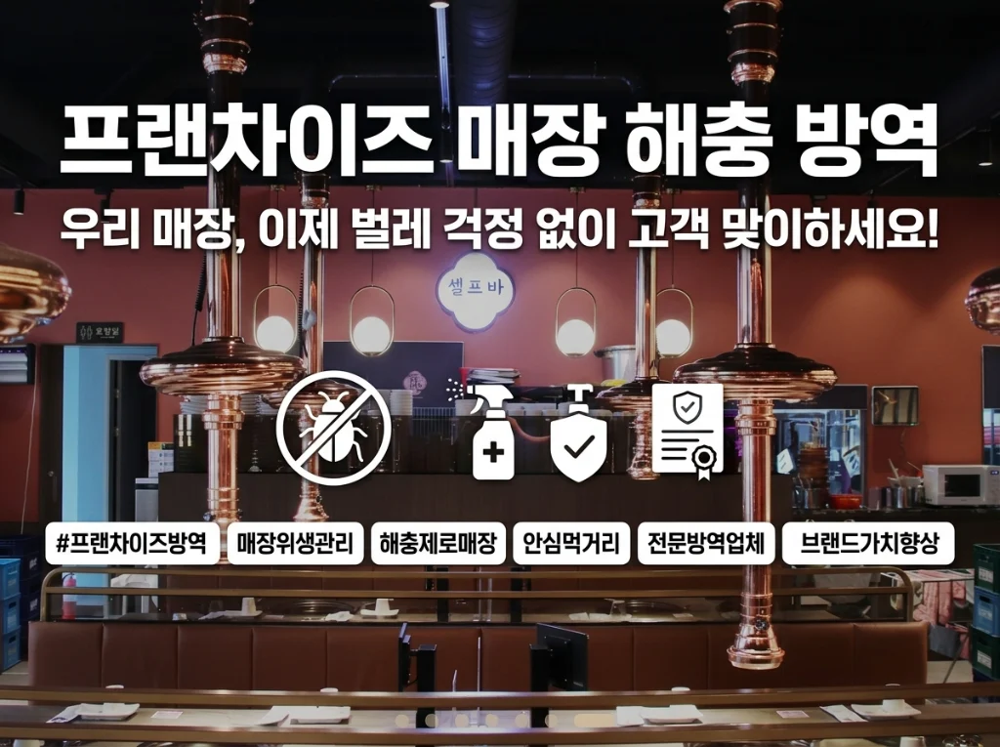
어떤 문제를 해결하고 싶나요?
해충 퇴치부터 바이러스 살균, HACCP 위생관리, 이물분석까지 최적의 솔루션을 제안합니다.


매장과 실내로 날아드는 파리·초파리·나방파리·모기가 고민이라면?
열·CO2·냄새에 끌리는 모기와 음식부패취·온도에 유인되는 파리의 침입 요인을 차단합니다. 배수구 유기물막·정화조 유충구제부터 고성능 포충기 배치까지 입체적으로 관리합니다.
- 배수구·정화조 유충원 관리
- 열·CO2·부패취 유인 차단
- 성충·유충·CS캡슐 맞춤 적용
- 고성능 포충기 파장 설계
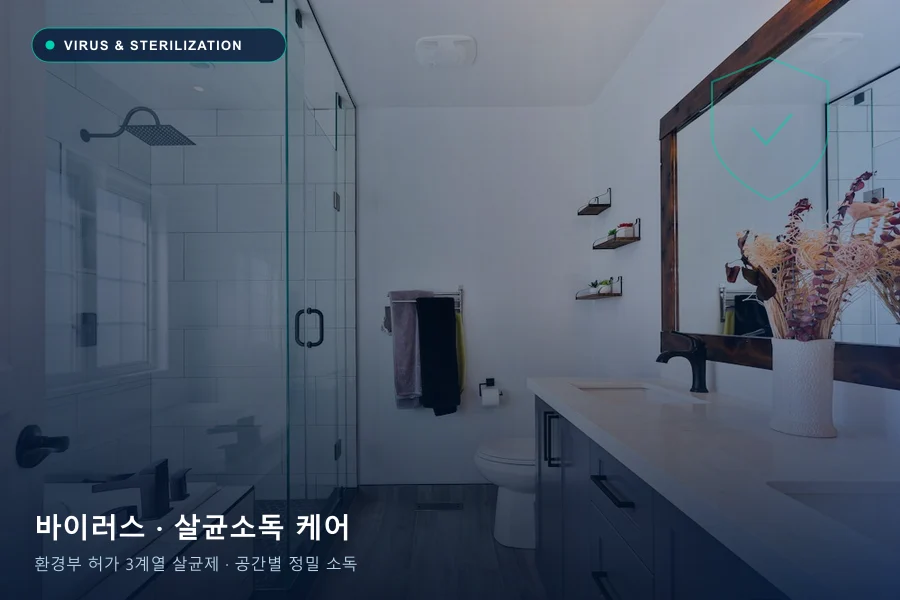
사람이 모이는 다중이용공간과 사업장, 보이지 않는 세균·바이러스까지 케어하려면?
환경부 허가 3가지 계열 살균제를 공간 특성과 표면 재질에 맞게 선정합니다. 오염 가능 구역과 고빈도 접촉 표면을 법정 기준과 안전 수칙에 맞춰 체계적으로 살균 소독합니다.
- 환경부 허가 3계열 살균제
- 공간·표면별 맞춤 소독 공법
- 다중이용시설 법정소독 대응
- 환기·재입실 안전 가이드
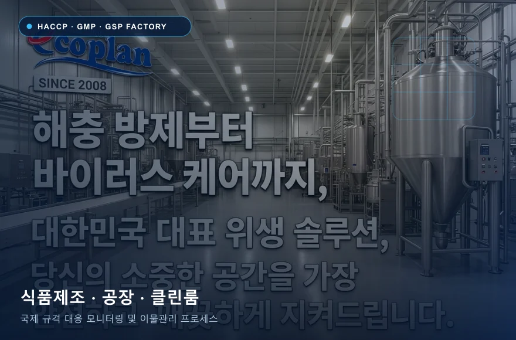
식품제조공장·외식 프랜차이즈의 까다로운 위생 규격과 정기 리포트가 필요하다면?
HACCP, GMP, GSP 등 국제·국내 위생 규격에 맞춘 방충·방서 모니터링 프로세스를 구축합니다. 화장실·탕비실·생산구역·하역장 등 120개 장소 유형별 전략과 위생점검·교육을 지원합니다.
- HACCP·GMP·GSP 맞춤 설계
- 120개 세부 장소별 방제전략
- 트랩·포획 추이 분석보고
- 현장 위생점검 및 위생교육
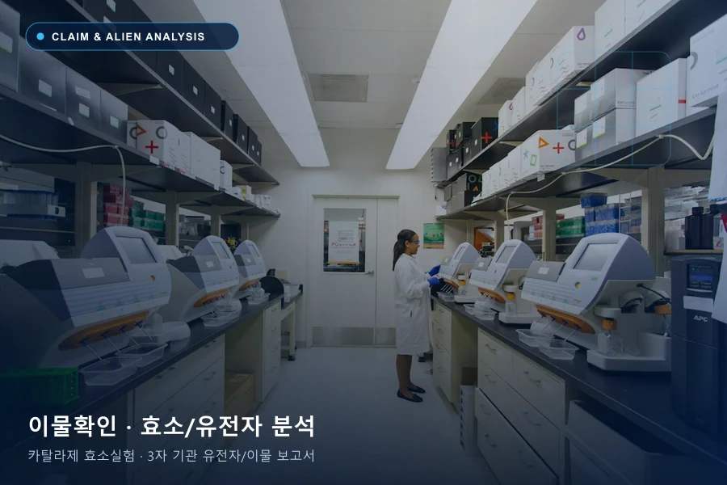
제품 혼입이나 이상 해충 발생, 객관적인 원인 규명과 보고서가 필요하다면?
정확성·전문성·객관성 확보 전략으로 클레임에 대응합니다. DB 검토와 재현실험은 물론, 카탈라제 효소실험과 제3자 전문기관 유전자·이물분석을 통해 신뢰할 수 있는 이물확인보고서를 제공합니다.
- 카탈라제 효소 반응 실험
- 제3자 기관 유전자·이물분석
- 공정·보관 경로 재현실험
- 객관적 이물확인보고서 작성
해충별 정밀 방제 솔루션
해충의 생활사와 서식처 특성에 맞춘 에코플랜의 4대 핵심 방제 솔루션
바퀴벌레 맞춤 솔루션
숨은 서식처와 유입 경로까지. 3W 발생 원인 진단부터 서식처 원천 차단과 정기 모니터링까지 체계적으로 관리합니다.

쥐 맞춤 솔루션
침입 차단부터 지속적인 모니터링. 3W 발생 원인 진단부터 서식처 원천 차단과 정기 모니터링까지 체계적으로 관리합니다.
파리·초파리·나방파리 맞춤 솔루션
발생원을 찾아 다시 생기지 않도록. 3W 발생 원인 진단부터 서식처 원천 차단과 정기 모니터링까지 체계적으로 관리합니다.

모기 맞춤 솔루션
성충과 유충, 생활사를 함께 관리. 3W 발생 원인 진단부터 서식처 원천 차단과 정기 모니터링까지 체계적으로 관리합니다.
에코플랜은 환경부 허가 약제를 해충별·계열별로 로테이션 적용하며, 약제 살포에만 의존하지 않고 3W 원인 진단·침입 경로 차단·모니터링을 결합해 재발 가능성을 낮춥니다.
어느 곳에 에코플랜이 필요한가요?
화장실·탕비실·주방·하역장 등 120개 세부 장소 유형과 업종별 기준에 맞춘 맞춤 솔루션을 제공합니다.
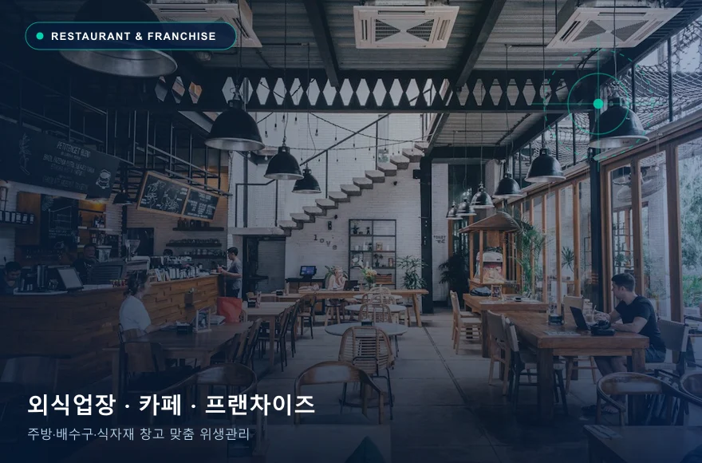
음식점·카페
주방·배수구·식자재 보관·폐기물 동선을 함께 점검합니다. 영업시간과 식품 노출을 고려해 작업 범위를 계획합니다.
주방 / 홀 / 창고 / 배수시설식품·제조시설
HACCP·GMP 등 시설별 요구사항을 확인하고, 방충·방서 계획과 모니터링 기록, 개선 조치를 연결합니다.
생산구역 / 하역장 / 원료창고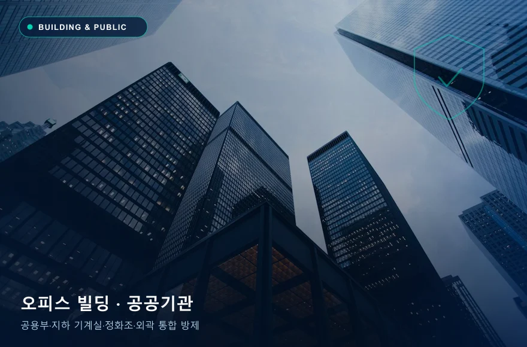
빌딩·공공기관
공용부와 개별 이용 공간의 구조를 구분하고, 외곽·지하·배관을 연결해 발생 원인을 확인합니다.
공용부 / 지하 / 외곽 / 기계실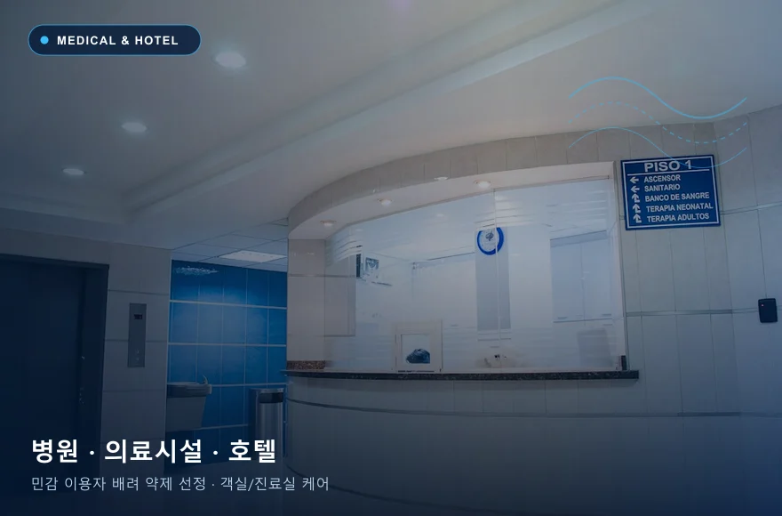
병원·호텔
이용자 특성, 객실·진료구역, 물품 이동과 청소 동선을 파악해 시설 운영에 맞춘 일정을 협의합니다.
객실 / 공용부 / 린넨·물품 보관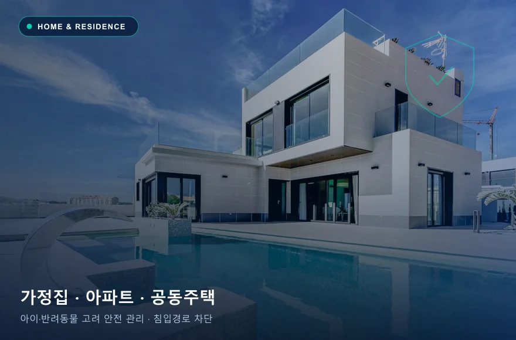
주택·공동주택
주방·욕실·발코니의 발생 흔적과 외부 연결 지점을 확인합니다. 어린이·반려동물 유무를 반영해 주의사항을 안내합니다.
주방 / 욕실 / 발코니 / 배관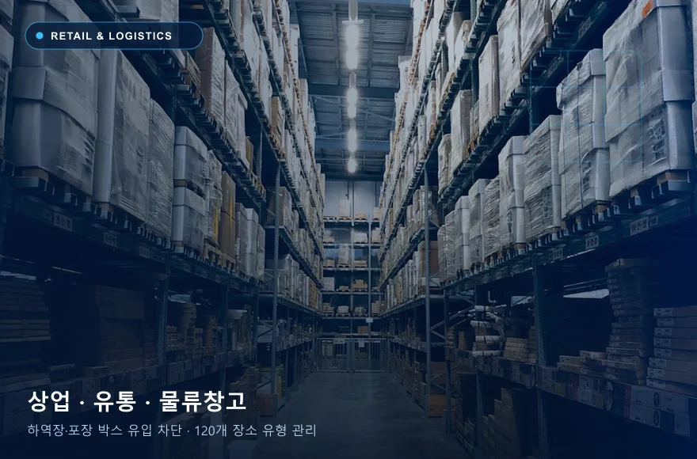
상업·유통시설
입고 물품과 포장재, 창고 적치물, 고객 출입구의 유입 가능성을 확인하고 관리 지점을 정합니다.
매장 / 창고 / 하역장 / 폐기물퇴치에서 끝나지 않는,
원인을 찾는 4단계 과학 방제.
왜 침입하는지(Why), 어디로 들어오는지(Where), 언제 활동하는지(When) 분석하고, 피레스로이드·네오니코티노이드·CS캡슐제제 등 계열별 약제 로테이션으로 내성과 독먹이 기피를 극복합니다.
사전조사 (3W 진단)
발생 이유(Why)·침입 경로(Where)·활동 시간(When) 3W 정밀 분석
계획수립 (IPM 설계)
해충의 생활사·행동 패턴과 시설 기준에 맞춘 방제 전략·주기 수립
맞춤 방제 & 약제 로테이션
계열별 허가 약제·장비 적용과 환경개선 제안을 동시에 실행
평가 · 사후 모니터링
포획·발생 기록으로 현 수준을 평가하고 재발 방지 기준 고도화
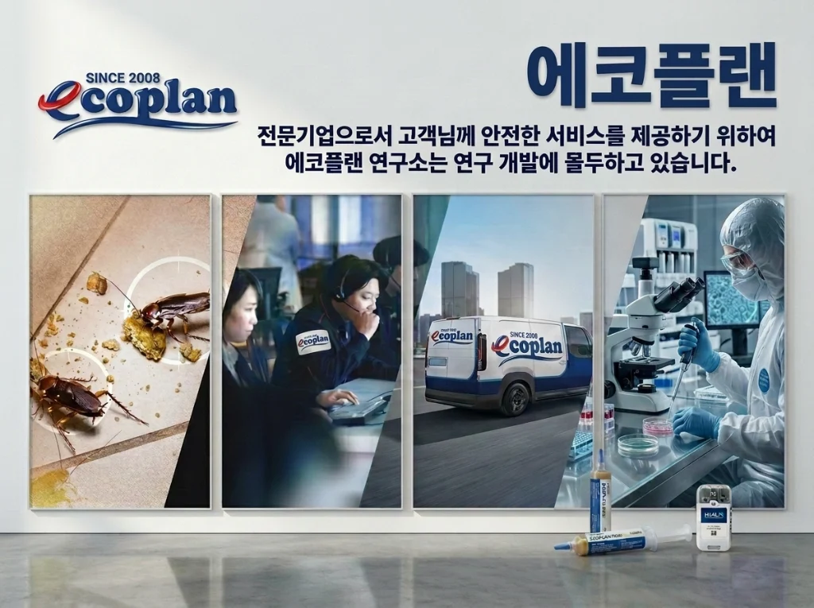
체계적인 교육을 이수한
방제 전문가가 직접 방문합니다.
법정교육은 물론 방제전문가 교육, 위해생물 방제사, 모기 동정 및 관리 과정을 수료하고 매년 세미나·전시회 및 현장 보수교육을 통해 최신 방제 기술을 적용합니다.
에코플랜은 어떤 서비스를 제공하나요?
에코플랜은 가정, 음식점, 상업시설, 빌딩, 제조시설 등의 해충방제와 방역소독을 상담합니다. 현장 조사, 해충별 방제 계획, 약제·장비 적용, 환경개선 제안, 사후 모니터링을 연결하는 공간케어 서비스를 제공합니다.
해충방제 비용은 어떻게 정해지나요?
방제 비용은 공간의 면적과 구조, 해충 종류, 발생 정도, 방문 횟수, 정기관리 여부에 따라 달라집니다. 상담 시 업종·지역·면적·발견 위치를 알려주시면 현장 확인 필요 여부와 견적 범위를 안내받을 수 있습니다.
한 번 방제하면 해충이 완전히 없어지나요?
한 번의 처리만으로 모든 현장의 해충 제거와 재발 방지를 보장할 수는 없습니다. 알의 부화, 외부 유입, 시설 상태 등 영향을 확인하고, 환경개선과 모니터링을 병행해 관리합니다.
아이와 반려동물이 있어도 방제를 받을 수 있나요?
상담 시 어린이·반려동물·민감한 이용자의 유무를 알려주세요. 현장과 제품에 맞춰 적용 위치, 접근 제한, 환기 및 재입실 안내를 확인해야 합니다. 허가·승인 제품도 사용 방법과 주의사항을 지켜야 합니다.
방제 후 언제 다시 공간을 이용할 수 있나요?
재입실 시간은 사용 제품, 처리 방식, 적용 장소와 환기 조건에 따라 다릅니다. 일률적인 시간 대신 작업 담당자가 안내하는 제품별 접근 제한·환기·청소 기준을 따라주세요.
HACCP·GMP 시설의 해충관리도 가능한가요?
에코플랜은 시설의 관리 요구사항을 확인해 방제 계획, 장비 위치, 모니터링 기록, 개선 조치 등 필요한 관리 범위를 상담합니다. 방제서비스 자체가 HACCP·GMP 인증이나 인증 취득을 보장하는 것은 아닙니다.